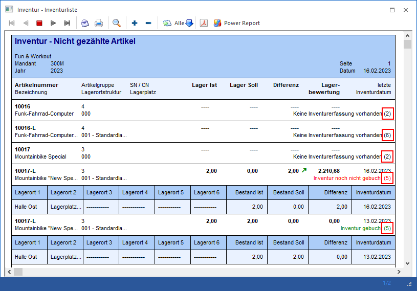

Die Gründe für die Ausgabe eines Artikels auf den Listen "3 - Nicht gezählte Artikel" und "4 - Inventurliste" sind vielfältig und von diversen Einstellungen abhängig. Für eine bessere Übersicht wird neben der Erfassungsinformation die Herkunft in Form einer Zahl ausgegeben.

Folgende Status sind hierbei möglich:
ü 1
Es handelt sich um einen
Artikel ohne Lagerorte. Die Daten der Ausgabe stammen aus der
Inventurerfassung.
ü 2
Es handelt sich um einen
Artikel ohne Lagerorte. Da es keine Inventurerfassungen gibt, stammen die Daten
der Ausgabe aus dem Artikelstamm.
ü 3
Es handelt sich um einen
Artikel mit Lagerorten, wobei die Option "Lagerorte berücksichtigen" nicht
aktiviert wurde!
Die Daten der Ausgabe stammen aus der Inventurerfassung,
wobei die jüngste Erfassung bei der Anzeige zum Tragen kommt.
ü 4
Es handelt sich um einen
Artikel mit Lagerorten, wobei die Option "Lagerorte berücksichtigen" nicht
aktiviert wurde!
Da es keine Inventurerfassungen gibt, stammen die Daten der
Ausgabe aus dem Artikelstamm, allerdings ohne Angabe von Lagerorten.
ü 5
Es handelt sich um einen
Artikel mit Lagerorten, wobei die Option "Lagerorte berücksichtigen" aktiviert
wurde. Des Weiteren wird mit der Lagerortanalyse " 0 - Inventurerfassung"
gearbeitet.
Die Daten der Ausgabe stammen aus der Inventurerfassung und
wurden pro Lagerort analysiert / ausgegeben.
ü 6
Es handelt sich um einen
Artikel mit Lagerorten, wobei die Option "Lagerorte berücksichtigen" aktiviert
wurde. Des Weiteren wird mit der Lagerortanalyse "1 - Inventurerfassung inkl.
Artikelstamm" gearbeitet.
Da es keine Inventurerfassungen gibt, stammen die
Daten der Ausgabe aus dem Artikelstamm, allerdings ohne Angabe von
Lagerorten.
ü 7
Es handelt sich um einen
Artikel mit Lagerorten, wobei die Option "Lagerorte berücksichtigen" aktiviert
wurde. Des Weiteren wird mit der Lagerortanalyse " 3 - Lagerortbestand"
gearbeitet.
Die Daten der Ausgabe stammen aus den Lagerortbeständen und
wurden mit der Inventurerfassung verglichen, wobei gültige Erfassung gefunden
wurden.
ü 8
Es handelt sich um einen
Artikel mit Lagerorten, wobei die Option "Lagerorte berücksichtigen" aktiviert
wurde. Des Weiteren wird mit der Lagerortanalyse " 3 - Lagerortbestand"
gearbeitet.
Die Daten der Ausgabe stammen aus den Lagerortbeständen und
wurden mit der Inventurerfassung verglichen, wobei keine gültige Erfassung
gefunden wurden.
ü 9
Es handelt sich um einen
Artikel mit Lagerorten, wobei die Option "Lagerorte berücksichtigen" aktiviert
wurde. Des Weiteren wird mit der Lagerortanalyse "4 - Lagerortbestand inkl.
Artikelstamm" gearbeitet.
Da es keine Lagerortbestände gibt, stammen die
Daten der Ausgabe aus dem Artikelstamm, allerdings ohne Angabe von
Lagerorten.
ü 10
Es handelt sich um einen
Artikel mit Lagerorten, wobei die Option "Lagerorte berücksichtigen" aktiviert
wurde. Des Weiteren wird mit der Lagerortanalyse "6 - Lagerortstamm"
gearbeitet.
Die Daten der Ausgabe stammen aus dem Lagerortstamm und wurden
mit der Inventurerfassung verglichen. Ob gültige Erfassung gefunden wurden ist
hierbei irrelevant.
ü 11
Es handelt sich um einen
Artikel mit Lagerorten, wobei die Option "Lagerorte berücksichtigen" aktiviert
wurde. Des Weiteren wird mit der Lagerortanalyse "2 - Inventurerfassung (erw.
Analyse) inkl. Artikelstamm" gearbeitet.
Die Daten der Ausgabe stammen aus
dem Artikelstamm, da gültige Erfassungen via Lagerort-Selektion ausgegrenzt
wurden.
ü 12
Es handelt sich um einen
Artikel mit Lagerorten, wobei die Option "Lagerorte berücksichtigen" aktiviert
wurde. Des Weiteren wird mit der Lagerortanalyse "5 - Lagerortbestand (erw.
Analyse) inkl. Artikelstamm" gearbeitet.
Die Daten der Ausgabe stammen aus
dem Artikelstamm, da gültige Lagerortbestände via Lagerort-Selektion ausgegrenzt
wurden.